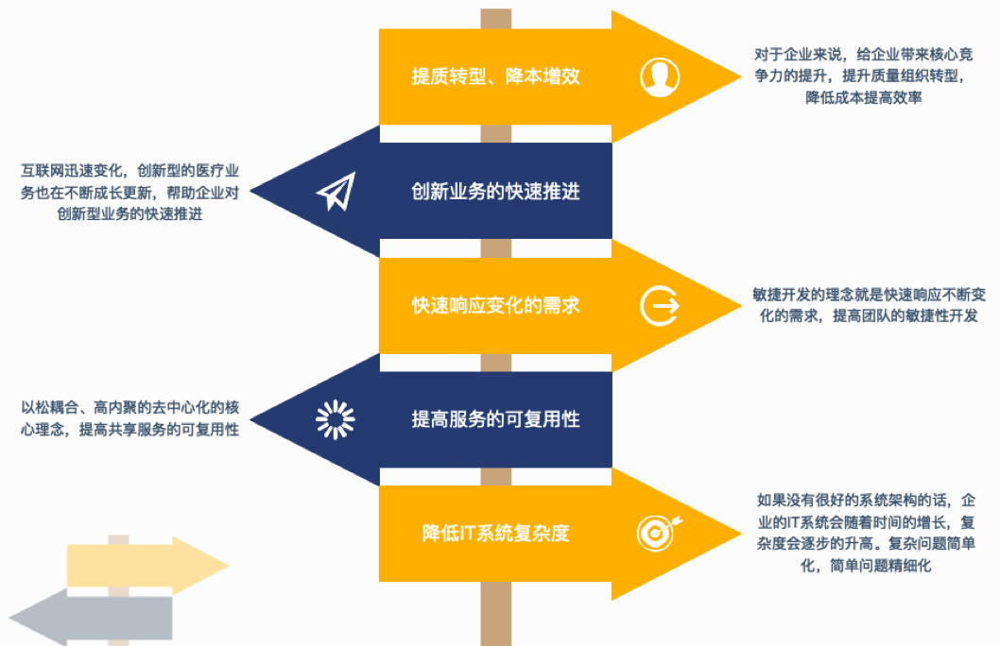
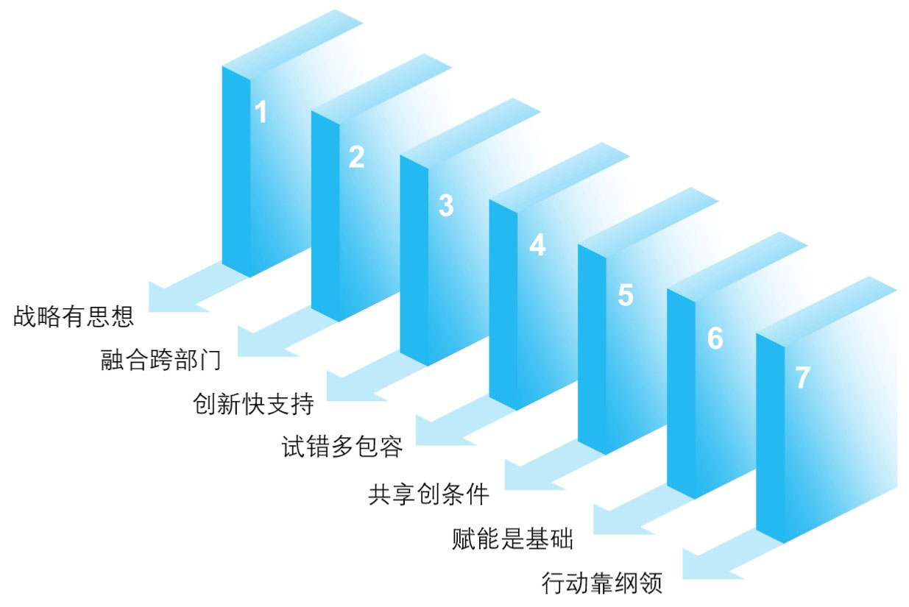

背景
今年参加了云栖大会，作为中台的践行者，我也更关注中台架构实施的行业状况，学习了其他公司中台的思想和经验。云栖大会上，我和做中台实践的同学，以及在阿里做中台的朋友进行了深入的交流和探讨，对做中台过程中遇到的比较纠结的问题进行了思考和总结。
在探讨中台哪些让人纠结不定烦心事之前，我们依然要谈谈我们为什么要做中台（注：本文中台局限于企业 IT 架构的中台，非广义上的中台），做中台到底给我带来哪些好处，想不清楚这些就去深入到中台的细节里也无意义。
中台概念这几年特别火，就像 90 年代不做 ERP 是等死一样，现在做不做中台也好像能定企业生死一样，弄得大家都在搞中台。但是不是所有的企业都适合做中台，只有符合以下条件的企业，才有实施中台的必要，切莫乱搞。
所以，如果您是创业团队，或者业务线比较单一，建议不要盲目尝试中台架构，否则将拖累你业务发展的速度 。另外，我们也要清晰的知道实施中台的目的，以及中台会给企业带来的价值，没有实际利益的推动中台就很难落地，或者有形而无神。

明确了中台的应用场景和价值体现，我们开始实施中台架构的落地。我从今年上半年开始推动中台这件事差不多有几个月的时间，在这个过程中也是摸着石头过河，虽然有很多中台的理论知识可以学习，但是实际的过程中发现，中台的落地是一件非常难的事情，它没有标准，认识也不统一，在一些关键环节存在不少分歧。
正好此次在云栖大会约了几个实践中台的朋友进行了深入的探讨，把讨论的内容进行总结，希望中台的建设少一些纠结，多一分信心。
中台定义：思想 VS 工具
什么是中台？每个人可能有不同的理解，行业里也没有严格的定义，但我更认同其中一个说法就是：中台是企业级能力复用的平台。
如何来解释这句话呢？

既然核心是能力复用，业务流派认为中台其实是一套思想，只要能够实现能力的复用，满足降本增效的企业目标，采取的所有措施，和一切可复用的能力都是中台的范畴，所以中台是一种组织方式。
而技术流派的人则认为，既然是能力复用的平台，就一定要有支撑复用的工具，就必须定义一套技术规范来支持复用，中台一定要有基础平台来支撑的。
中台首先要统一思想，围绕能力的复用进行组织管理，将能力组件化，如下图最底层部分；同时，中台之上我们要构建能快速落地的技术平台（如图中 OECP 部分），通过 Low code 的平台能力，实现组件的组装和流程的设计，快速的构建应用。
技术平台是业务无关性的，但业务中台一定是业务相关性的，只要把业务和技术有机的组合起来，把企业的能力沉淀并复用起来，这就有了中台的基础。
复用粒度：粗粒度 VS 细粒度
复用是中台建设的核心，是一切的基础，没有复用的意识导向，中台就变成了自娱自乐的游戏。也许很多人会说，没有中台之前复用无处不在啊，我们写程序复用代码，做方案复用案例，为什么一定要建设中台呢？
首先，再次重申下中台的复用范围是“企业级”，它既不局限于技术同学内的程序复用，也不局限于一个团队内部的复用，而是站在企业最高的视角，作用于整个企业的 IT 架构；其次是“能力的复用”，能力的范围更加宽泛。
和阿里的朋友谈到复用时，我们也提到了复用的级别，像阿里云其实就是在基础设施这个级别上的复用。我自己把复用的级别抽象成下图所示的 5 层。
级别越低，粒度越小，复用的范围越广，但价值体现较低；级别越高，粒度越大，复用的价值越高，但复用范围也比较局限。
所以站在业务和价值角度上，都是先从最高的层次上去复用。只有上层无法实现复用，我们才会逐步向下层去寻找。但是有时候站在技术角度，我们习惯在低层次上去复用，因为这里最接近自己的工作，粒度越小，技术上越可控。但不论怎样只要我们能把这些能力很好的组织管理起来并实现复用，就是中台的思维。
具体到中台落地的 IT 架构，微服务基础架构是目前最流行的方式，因为单纯程序代码的复用价值有限，而传统单体应用的复用又极其的不灵活，而基于微服务架构的业务组件的复用则处在中间层级，灵活性和复用度比较平衡。
组件复用的核心思想是领域驱动设计（DDD)，而我认为 DDD 最大难点是粒度的控制，粒度太粗不灵活、复用性差，粒度太细虽然复用性好，但耦合较大，运维成本较高。
Gartner 在研究报告里提出了宏服务、小服务和微服务的粒度划分：
宏服务——一种传统的 Web 服务，支持将功能封装于单体应用内。宏服务不支持独立部署或扩展， 它们只能部署为单体应用的一部分，而且它们不需要微服务基础架构。
小服务——就服务粒度范围而言，小服务是一种粗粒度、松散耦合、支持独立部署的应用组件。小服务需要微服务基础架构。
微服务——微服务处于粒度范围的远端，是一种可独立部署的组件，能够支持单个应用功能的实施。微服务可直接部署到微服务运行时环境中，也往往具备专用数据存储区。微服务需要微服务基础架构。
我本人非常喜欢 Gartner 的划分方式，基于这三种服务的粒度，我也谈谈我对粒度把握的一些思路。
如果我们想对已存在系统的能力进行复用，可以采用宏服务模式进行，宏服务的模式适合做系统的集成和治理。我们对于新的业务和项目，刚开始建议采用小服务的方式进行业务领域的拆分，不建议拆分的过细，这个小服务能满足该需求的基本抽象即可。从适中的粒度开始，服务的粒度一定是业务推进的过程中不断演化的，创新业务推动服务的粒度向更细的粒度裂变，而业务成熟稳定后，又推动服务向粗粒度方向聚合。
流程支持：服务编排 VS SOP
实践证明，业务能力输出的内容主要是核心业务数据和业务流程。而在我上面定义的复用级别上，业务流程的复用处在 LV4，也是比较高阶的复用能力。
云栖大会的朋友聚会上，我一个实践中台的同学谈到中台服务如何更加灵活的支撑前台时谈到服务的编排。他们的做法是给前台同事提供了一套服务编排的工具，然后发布一系列的原子性的服务，由各前台团队按照自己流程去编排适合自己的逻辑流程。
我不反对服务编排，而且在 SOA 和微服务的架构下，服务编排是必不可少的能力。但是我不认可给前台提供编排工具，而中台只提供原子性服务。因为我们在中台的建设中，一直提及的是中台一定是业务相关性的，中台输出的不仅仅是工具，更要深入到具体的业务场景中，提供业务流程的最佳实践。
阿里的朋友在讨论这个问题是提到了 SOP（Standard Operation Procedure）的概念，他认为最好的做法是提供一套标准化的流程 + 预留可动态注入的扩展点的方式来对前台提供。
比如淘宝和天猫在业务上可以共享一套 SOP，在这套 SOP 的扩展点上各自注入自己不同的规则，从而满足自己的需求。从中台的复用范围来看，我特别认同这种方式，因为中台只有提供 SOP，才是真正的实现业务流程这种高阶的复用（就像国外 ERP 宣扬的那样，你购买的不只是一套系统，还有企业管理到最佳实践）。
当然如果要做到 SOP 的定义，中台团队必须有既精通业务又熟悉技术的人，我们俗称“业务架构师”，不过水平高的人实在可遇不可求啊。从这点我也理解把工具开放给前台自己做服务编排的同学了。
虽然我一直在强调中台要深入业务，要提炼 SOP，但中台又不能过度参与业务，不能因为中台掣肘了业务的敏捷性。中台提供的能力要具有灵活性和可定制性，便于业务方根据规范自主完成，减少沟通成本，提升效率。所以服务编排作为工具还是需要提供，前期通过工具快速尝试探索合适的业务流程，后期通过业务的最佳实践形成 SOP。
先后顺序：先业务中台 VS 先数据中台
虽然各种中台很多，但是真正和业务保持密切协同的是业务中台和数据中台，阿里巴巴的中台核心也是这双中台驱动的，这里面体现的核心就是一切业务数据化，一切数据业务化，业务产生数据，数据又赋能业务。
向左还是向右？聊聊中台建设中的那些纠结事
在和某 Gartner 分析师交流的时候，他的观点是先有业务中台，再有数据中台。虽然我们也是从业务中台开始，但我个人并不是特别认可这个观点的，我更认可的是先业务后数据，但是对于哪个中台先开始，完全要看各企业的自身情况。
如果企业当前最迫切的诉求是避免重复造轮子，提升 IT 生产力，数据基础相对较好或者数据量级不够，建议业务中台先行。
如果企业当前最迫切的诉求是系统繁多但孤岛严重急需要打通，企业已经存在大量的数据急需要在业务上发挥价值，建议数据中台先行。
具有自主技术研发团队特点的科技企业更适合先业务中台，而自主开发能力较弱，应用系统更多依赖第三方外采的偏传统企业，可能更适合数据中台先行。
中台团队：委员会 VS 许愿池
中台的建设是一把手工程，没有自上而下的推动，中台是很难落地的。所以中台变革的第一步就是组织架构的调整，需要建立一个中台团队来负责组织、协调和建设。
如何对中台团队定位其实也是一个难题，在我所见所经历的中台组织中，经常出现两种形态：
第一种是委员会。中台团队是由各业务线选派的同事组成的虚拟组织，其中大部分都是领导，更多的承担组织、协调的角色，具体执行工作分散在原有的各个部门里，这种可称为委员会似的中台。因为各部门的领导组成，相互之间加强了信息共享，也逐步有了复用的意识，但在企业 IT 建设这个环节，因为没有具体的专注于共享业务的执行团队，协作成本会增高、实际产出可能比较务虚，看着热闹，其实很难体现复用的价值。
第二种是许愿池。中台只是普通的共享研发部门，前台直接把需求丢到这个许愿池里，然后期盼着中台提供一个现成的组件、服务，中台成了为前台打工的了，累不用说还不讨好，阿里早期的共享业务事业部估计就是这种窘境，没有业务话语权。
中台团队既不应该是委员会也该是许愿池，中台不仅能组织、能引领，又必须要有实际的产出。中台需要前台滋养，前台更需要中台赋能，中台团队只有成为具有核心话语权的实体团队，企业能力的复用才能最大化的发挥出来。所以阿里巴巴让其 CTO 行癫张建峰挂帅推进中台战略，才有了今天阿里中台的影响力。
其实中台建设过程中碰到的问题远不止这些，需要我们在实践中去探索正确的解题方法。最后引用《中台战略》书中的内容结束本文，希望践行中台的同仁都能马到成功。

参考资料：
- 《中台战略：中台建设及数字商业》 陈新宇等 机械工业出版社
- 《MASA 架构》 Gartner 分析报告
作者：
谭明智 ，经历技术、产品、运营等多个领域，现在负责百洋智能科技产品研发。喜欢并擅长做 IT 架构和产品架构，微信公众号：菜根乱谭（ID:CGLT_TAN），欢迎关注，聊产品，聊技术。
原文地址:https://www.infoq.cn/article/5PE1xqMf7acQORp2cD8Z?utm_source=rss&utm_medium=article